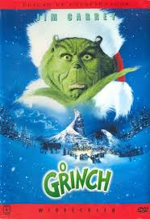

O Grinch
Sobre
Descrição: O rabugento Grinch faz de tudo para acabar com o Natal dos cidadãos de Quemlândia. Seu plano é roubar das pessoas tudo que tenha ligação com a data, até que a menina Cindy Lou Who resolve ficar amiga dele.
Data de lançamento: 8 de dezembro de 2000 (Brasil)
Diretor: Ron Howard
Autor: Dr. Seuss
Gêneros: Animação, Infantil, Comédia, Ação, filme familiar, Filme musical, Fantasia, Drama, Adolescente
Duração: 1h 45m
Orçamento: 123 milhões USD